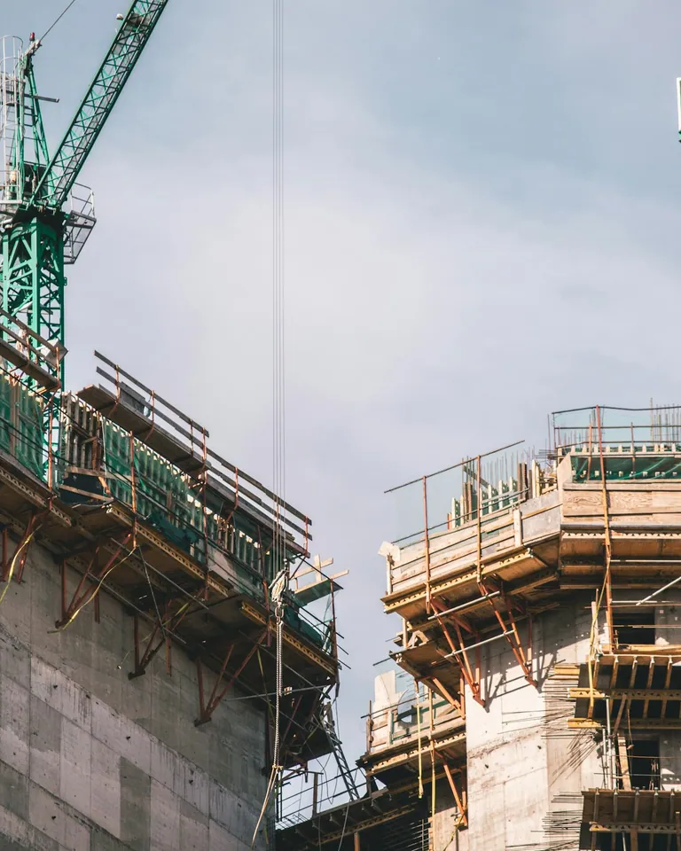
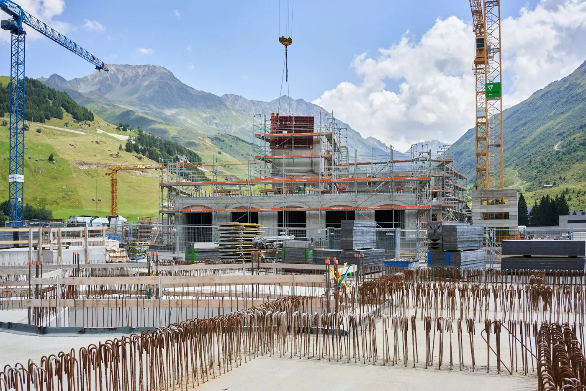

01 / ОСНОВАНИЕ
Строительство
Частные дома и небольшие коммерческие объекты — с последовательным контролем работ.
↗СТРОИТЕЛЬНАЯ КОМПАНИЯ · КИЕВ
Дома, в которых продумана каждая деталь. От первого плана до последнего штриха.

Мы объединяем проектирование и строительство в один понятный процесс. Сначала разбираемся в задаче, затем планируем работы, бюджет и сроки.
Вы знаете, что происходит на каждом этапе — от выбора материалов до сдачи объекта.
Как проходит работаБерём на себя весь цикл или подключаемся к конкретному этапу.
Примеры направления и визуального языка — проекты на этой странице демонстрационные.

Реконструкция загородного дома
Новый корпус в горном ландшафте
Держим связь и показываем прогресс, чтобы вы принимали решения вовремя и без спешки.
Обсуждаем задачу, участок, пожелания и ограничения.
Фиксируем объём работ, материалы, сроки и бюджет.
Работаем по этапам, регулярно сообщая о ходе проекта.
Проверяем завершённые работы и передаём объект.
СЛЕДУЮЩИЙ ШАГ
Расскажите, что хотите построить или обновить. Подготовим понятный план для старта.
Заполнить бриф